⼀ .⼤数据系统设计思路概览
⼤数据概念与传统定义
狭义的⼤数据–专⻔的⼤数据软硬件以及服务
源起Google搜索引擎背后的三驾⻢⻋
- GFS
- MapReduce
- BigTable
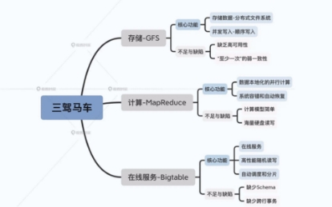
从GFS到DataFlow,19年⼤数据架构⽣态演进
- Lambda 架构
- Kappa 架构
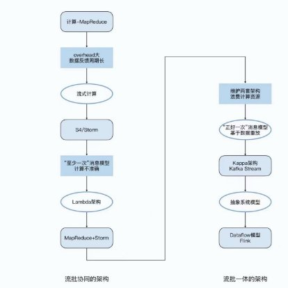
⼴义的⼤数据–“⼤数据”是指传统数据处理应⽤软件时，不⾜以处理的⼤的或者复杂的数据集 的术语
维基百科的定义
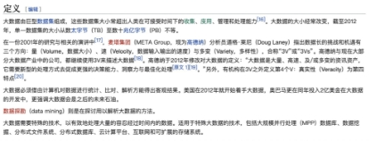
⼤数据的4V

⼤数据技术–⼤数据技术其实是计算机科学中很多科⽬的综合应⽤
简单的⼤数据技术栈
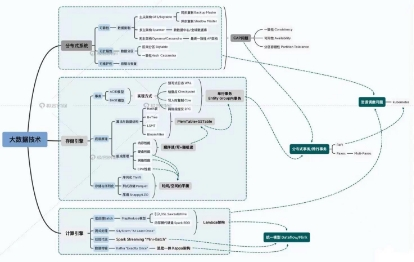
⼤数据分类–基于系统层⾯开展的细分领域
分布式系统
数据编码
数据表现形式⽆⾮两种：
- 内存中数据保存对象，结构体、列表、数组、哈希表和树结构等等，传统的数据结构对于 CPU⾼效访问优化。
- 数据写⼊⽂件通过⽹络发送，必须要编码为某种字节序列，但是由于⼀些虚拟字节⽐如指针的存在所以和内存的表现形式有可能不⼀样。
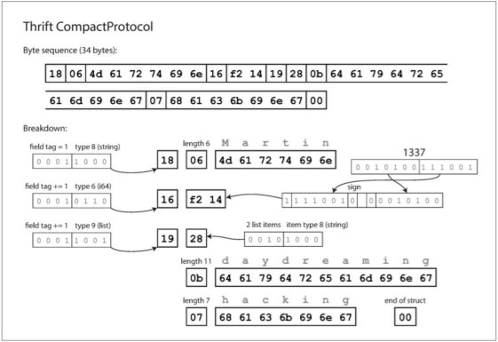
数据分区
哈希分区
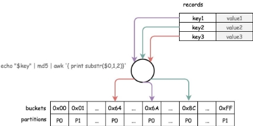
范围分区
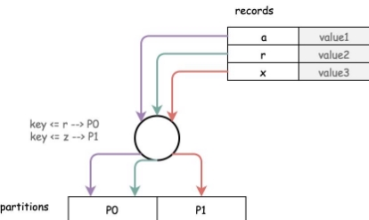
数据复制
单领导者（单主复制）
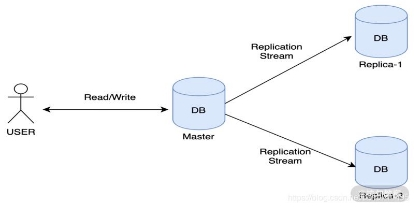
多领导者（多主复制）
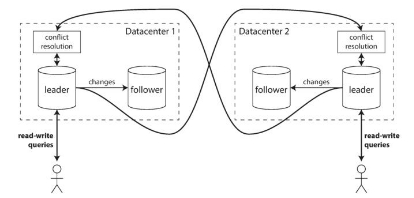
⽆领导者（⽆主复制）
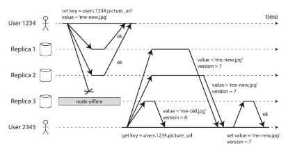
每种⽅法都有优点和缺点。单主复制是⾮常流⾏的，因为它很容易理解，不需要担⼼冲突解决。在出现故障节点，⽹络中断和延迟峰 值的情况下，多领导者和⽆领导者复制可以更加稳健，但代价很难推测，只能提供⾮常弱的⼀致性保证。
复制可以是同步的，也可以是异步的，在发⽣故障时对系统⾏为有深远的影响。尽管在系统运⾏平稳时异步复制速度很快，但是在复 制滞后增加和服务器故障时要弄清楚会发⽣什么， 这⼀点很重要。如果⼀个领导者失败了，并且你推动⼀个异步更新的追随者成为新 的领导者，那么最近承诺的数据可能会丢失。
数据检索与索引
哈希索引
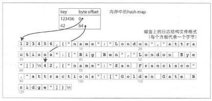
SSTables和 LSM TREE
合并多个 SSTable 段，仅保留每个键的最新值。
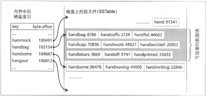
SSTable 及其内存中的索引。
数据模型 关系模型与⽂档模型
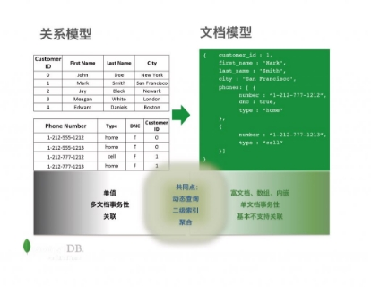
图状数据模型
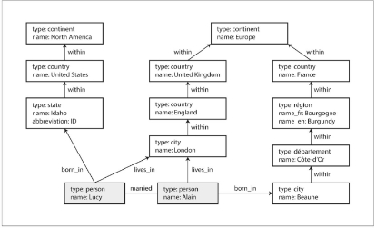
数据批处理与流处理
mapreduce 模式的批处理
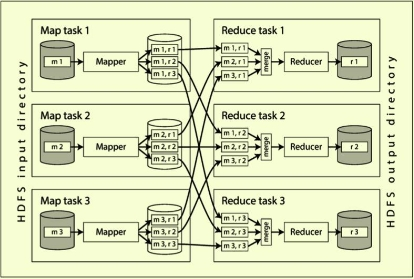
flink的 dataflow流处理模式
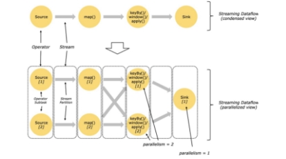
数据事务⼀致性
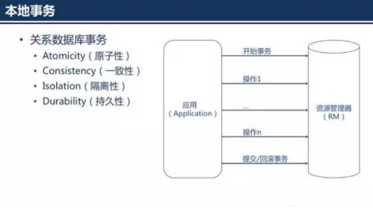
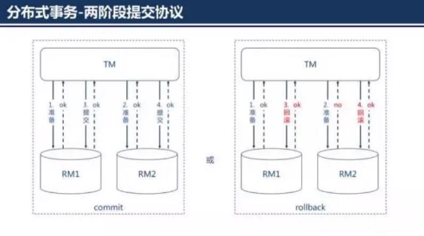
数据压缩与存储 列存储
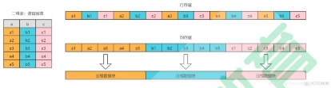
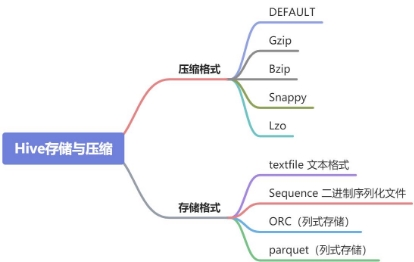

数据⼀致性与共识
分布式系统挑战
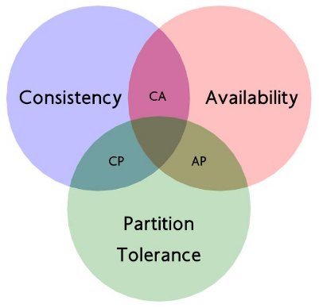
2PC/3PC和 Paxos协议是经典的分布式协议
Two Phase指的是 Commit-request阶段 Commit阶段。
 请求阶段
请求阶段
在请求阶段，协调者将通知事务参与者准备提交或取消事务，然后进⼊表决过程。 在表决过程中，参与者将告知协调者⾃⼰的决策：同意（事务参与者本地作业执⾏成功）或取消（本地作业执⾏故障）。
 提交阶段
提交阶段
在该阶段，协调者将基于第⼀个阶段的投票结果进⾏决策：提交或取消。 当且仅当所有的参与者同意提交事务协调者才通知所有的参与者提交事务，否则协调者将通知所有的参与者取消事务。参与者在接收 到协调者发来的消息后将执⾏响应的操作。

 同步阻塞
同步阻塞
执⾏过程中，所有参与节点都是事务独占状态，当参与者占有公共资源时，第三⽅节点访问公共资源被阻塞。
 单点问题
单点问题
⼀旦协调者发⽣故障，参与者会⼀直阻塞下去。

三阶段提交针对两阶段提交做了改进：
- 引⼊超时机制。在 2PC中，只有协调者拥有超时机制， 3PC同时在协调者和参与者中都引⼊超时机制。
- 在第⼀阶段和第⼆阶段中插⼊⼀个准备阶段。保证了在最后提交阶段之前各参与节点的状态是⼀致的。
Paxos算法
应⽤最⼴的分布式⼀致性算法。
节点⻆⾊
- Proposer:提案者 ;
- Acceptor:批准者 ;
- Learner:学习者 ;
约束条件：
- Acceptor必须接受它收到的第⼀个提案；
- 如果⼀个提案的 v值被⼤多数 Acceptor接受过，那后续的所有被接受的提案中也必须包含 v值（ v值可以理解为提案的内容，提案 由⼀个或多个 v和提案编号组成）；
- 如果某⼀轮 Paxos 协议批准了某个 value，则以后各轮 Paxos 只能批准这个 value；
通信， 两个阶段 4个过程 ：
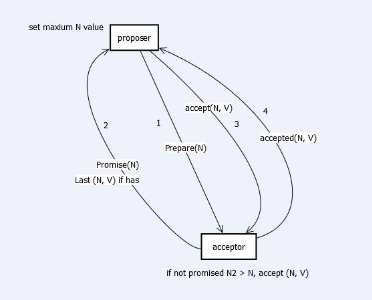
选举

^1⼤数据当今的趋势与潮流
流批⼀体实时计算 数据湖 ⽆服务化(serverless) 应⽤层⾯–低代码化
⼆.Flink SQL 构建端到端的实时数据应⽤简单Demo演示
基于docker集成组件
- Flink SQL CLI: used to submit queries and visualize their results.
- Flink Cluster: a Flink JobManager and a Flink TaskManager container to execute queries.
- MySQL: MySQL 5.7 and a pre-populated category table in the database. The category table will be joined with data in Kafka to enrich the real-time data.
- Kafka: mainly used as a data source. The DataGen component automatically writes data into a Kafka topic.
- Zookeeper: this component is required by Kafka.
- Elasticsearch: mainly used as a data sink.
- Kibana: used to visualize the data in Elasticsearch.
- DataGen: the data generator. After the container is started, user behavior data is automatically generated and sent to the Kafka topic. By default, 2000 data entries are generated each second for about 1.5 hours. You can modify DataGen’s speedupparameter in docker-compose.yml to adjust the generation rate (which takes effect after Docker Compose is restarted).
相关的flinkSQL
数据流外部表构建
⽤户⾏为⽇志表–user_behavior
[^2] CREATE TABLE user_behavior (
2 user_id BIGINT,
2 item_id BIGINT,
2 category_id BIGINT,
2 behavior STRING,
2 ts TIMESTAMP(3),
2 proctime AS PROCTIME(), – generates processing-time attribute using computed column
8 WATERMARK FOR ts AS ts - INTERVAL ‘5’ SECOND – defines watermark on ts column, marks ts as even 9 ) WITH (
10 ‘connector’ = ‘kafka’, – using kafka connector
11 ‘topic’ = ‘user_behavior’, – kafka topic
12 ‘scan.startup.mode’ = ‘earliest-offset’, – reading from the beginning
13 ‘properties.bootstrap.servers’ = ‘kafka:9094’, – kafka broker address
14 ‘format’ = ‘json’ – the data format is json 15 );
2 hour_of_day BIGINT,
2 buy_cnt BIGINT
2 ) WITH (
5 ‘connector’ = ‘elasticsearch-7’, – using elasticsearch connector
6 ‘hosts’ = ‘http://elasticsearch:9200', – elasticsearch address
7 ‘index’ = ‘buy_cnt_per_hour’ – elasticsearch index name, similar to database table name 8 );
实现实时统计每天各时段商品购买量统计
[^3] INSERT INTO buy_cnt_per_hour
[^4] SELECT HOUR(TUMBLE_START(ts, INTERVAL ‘1’ HOUR)), COUNT(*) [^5] FROM user_behavior
[^6] WHERE behavior = ‘buy’
[^7] GROUP BY TUMBLE(ts, INTERVAL ‘1’ HOUR);
cumulative_uv 外部表
1 CREATE TABLE cumulative_uv (
1 date_str STRING,
1 time_str STRING,
1 uv BIGINT,
5 PRIMARY KEY (date_str, time_str) NOT ENFORCED [^8] ) WITH (
[^9] ‘connector’ = ‘elasticsearch-7’,
[^10] ‘hosts’ = ‘http://elasticsearch:9200',
[^11] ‘index’ = ‘cumulative_uv’
[^12] );
实现实时每10分钟唯⼀访客的累计统计
1 INSERT INTO cumulative_uv
1 SELECT date_str, MAX(time_str), COUNT(DISTINCT user_id) as uv
1 FROM (
1 SELECT
5 DATE_FORMAT( ts, ‘yyyy-MM-dd’) as date_str,
6 SUBSTR(DATE_FORMAT( ts, ‘HH:mm’),1,4) || ‘0’ as time_str,
7 user_id
7 FROM user_behavior)
7 GROUP BY date_str;
顶级品类分布维度外部表
12 );
顶级品类分布计算结果外部表
1 CREATE TABLE top_category (
1 category_name STRING PRIMARY KEY NOT ENFORCED,
1 buy_cnt BIGINT
1 ) WITH (
5 ‘connector’ = ‘elasticsearch-7’,
6 ‘hosts’ = ‘http://elasticsearch:9200',
7 ‘index’ = ‘top_category’ 8 );
⾏为表与品类纬度表实时关联虚拟视图
1 CREATE VIEW rich_user_behavior AS
1 SELECT U.user_id, U.item_id, U.behavior, C.parent_category_name as category_name
1 FROM user_behavior AS U LEFT JOIN category_dim FOR SYSTEM_TIME AS OF U.proctime AS C
1 ON U.category_id = C.sub_category_id;
实时计算顶级品类分布
1 INSERT INTO top_category
1 SELECT category_name, COUNT(*) buy_cnt
1 FROM rich_user_behavior
1 WHERE behavior = ‘buy’
1 GROUP BY category_name;
Kibana可视化
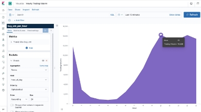
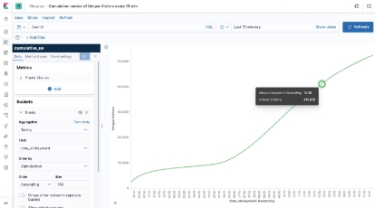
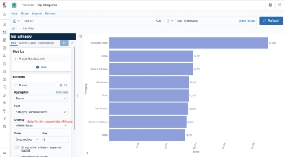
三.学习渠道与图书推荐
计算机体系原理必读
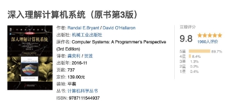
分布式经典
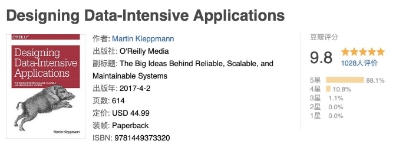
⼤数据技术栈相关
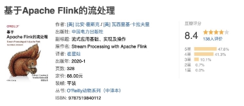
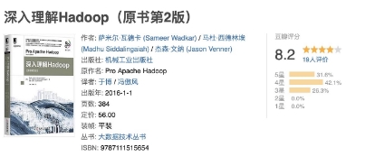
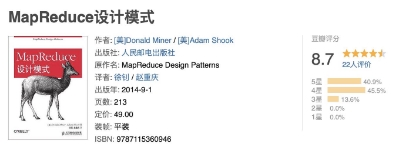
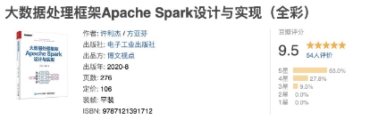
其他⼀些相关和拓展


[^2]: CREATE TABLE buy_cnt_per_hour (
[^3]: CREATE TABLE category_dim (
[^4]: sub_category_id BIGINT,
[^5]: parent_category_name STRING
[^6]: ) WITH (
[^7]: ‘connector’ = ‘jdbc’,
[^8]: ‘url’ = ‘jdbc:mysql://mysql:3306/flink’,
[^9]: ‘table-name’ = ‘category’,
[^10]: ‘username’ = ‘root’,
[^11]: ‘password’ = ‘123456’,
[^12]: ‘lookup.cache.max-rows’ = ‘5000’,
11 'lookup.cache.ttl' = '10min'